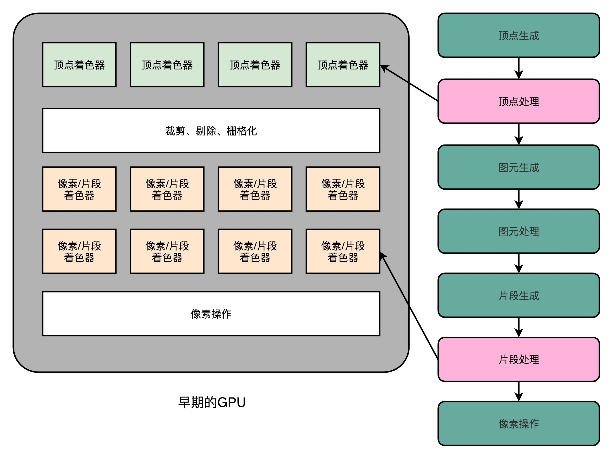
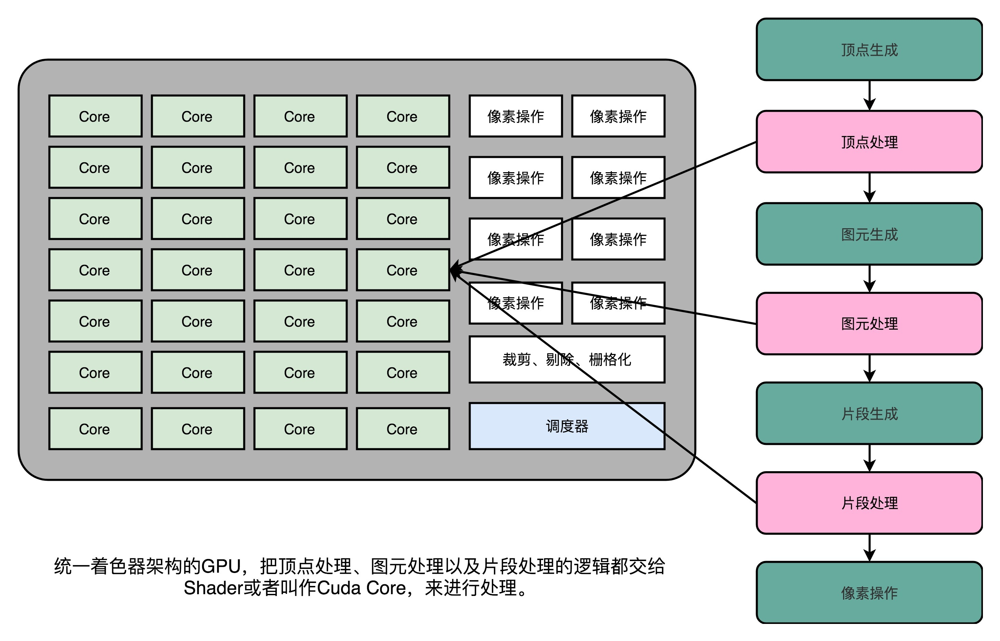
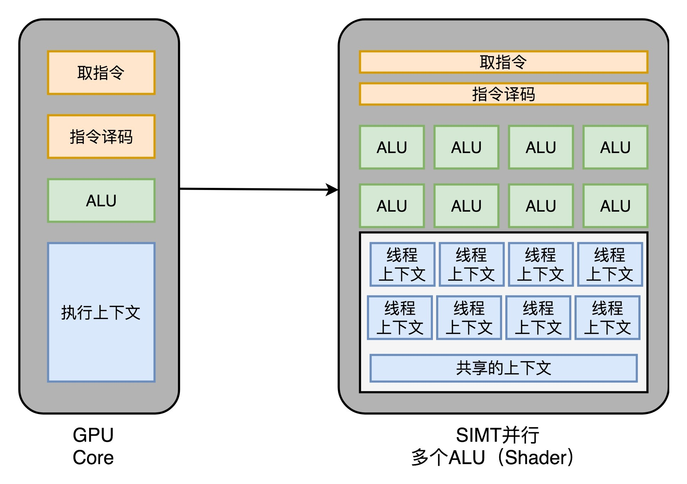

- 00 开篇词 为什么你需要学习计算机组成原理？.md.html
- 01 冯·诺依曼体系结构：计算机组成的金字塔.md.html
- 02 给你一张知识地图，计算机组成原理应该这么学.md.html
- 03 通过你的CPU主频，我们来谈谈“性能”究竟是什么？.md.html
- 04 穿越功耗墙，我们该从哪些方面提升“性能”？.md.html
- 05 计算机指令：让我们试试用纸带编程.md.html
- 06 指令跳转：原来if...else就是goto.md.html
- 07 函数调用：为什么会发生stack overflow？.md.html
- 08 ELF和静态链接：为什么程序无法同时在Linux和Windows下运行？.md.html
- 09 程序装载：“640K内存”真的不够用么？.md.html
- 10 动态链接：程序内部的“共享单车”.md.html
- 11 二进制编码：“手持两把锟斤拷，口中疾呼烫烫烫”？.md.html
- 12 理解电路：从电报机到门电路，我们如何做到“千里传信”？.md.html
- 13 加法器：如何像搭乐高一样搭电路（上）？.md.html
- 14 乘法器：如何像搭乐高一样搭电路（下）？.md.html
- 15 浮点数和定点数（上）：怎么用有限的Bit表示尽可能多的信息？.md.html
- 16 浮点数和定点数（下）：深入理解浮点数到底有什么用？.md.html
- 17 建立数据通路（上）：指令加运算=CPU.md.html
- 18 建立数据通路（中）：指令加运算=CPU.md.html
- 19 建立数据通路（下）：指令加运算=CPU.md.html
- 20 面向流水线的指令设计（上）：一心多用的现代CPU.md.html
- 21 面向流水线的指令设计（下）：奔腾4是怎么失败的？.md.html
- 22 冒险和预测（一）：hazard是“危”也是“机”.md.html
- 23 冒险和预测（二）：流水线里的接力赛.md.html
- 24 冒险和预测（三）：CPU里的“线程池”.md.html
- 25 冒险和预测（四）：今天下雨了，明天还会下雨么？.md.html
- 26 Superscalar和VLIW：如何让CPU的吞吐率超过1？.md.html
- 27 SIMD：如何加速矩阵乘法？.md.html
- 28 异常和中断：程序出错了怎么办？.md.html
- 29 CISC和RISC：为什么手机芯片都是ARM？.md.html
- 30 GPU（上）：为什么玩游戏需要使用GPU？.md.html
- 31 GPU（下）：为什么深度学习需要使用GPU？.md.html
- 32 FPGA、ASIC和TPU（上）：计算机体系结构的黄金时代.md.html
- 33 解读TPU：设计和拆解一块ASIC芯片.md.html
- 34 理解虚拟机：你在云上拿到的计算机是什么样的？.md.html
- 35 存储器层次结构全景：数据存储的大金字塔长什么样？.md.html
- 36 局部性原理：数据库性能跟不上，加个缓存就好了？.md.html
- 37 理解CPU Cache（上）：“4毫秒”究竟值多少钱？.md.html
- 38 高速缓存（下）：你确定你的数据更新了么？.md.html
- 39 MESI协议：如何让多核CPU的高速缓存保持一致？.md.html
- 40 理解内存（上）：虚拟内存和内存保护是什么？.md.html
- 41 理解内存（下）：解析TLB和内存保护.md.html
- 42 总线：计算机内部的高速公路.md.html
- 43 输入输出设备：我们并不是只能用灯泡显示“0”和“1”.md.html
- 44 理解IO_WAIT：IO性能到底是怎么回事儿？.md.html
- 45 机械硬盘：Google早期用过的“黑科技”.md.html
- 46 SSD硬盘（上）：如何完成性能优化的KPI？.md.html
- 47 SSD硬盘（下）：如何完成性能优化的KPI？.md.html
- 48 DMA：为什么Kafka这么快？.md.html
- 49 数据完整性（上）：硬件坏了怎么办？.md.html
- 50 数据完整性（下）：如何还原犯罪现场？.md.html
- 51 分布式计算：如果所有人的大脑都联网会怎样？.md.html
- 52 设计大型DMP系统（上）：MongoDB并不是什么灵丹妙药.md.html
- 53 设计大型DMP系统（下）：SSD拯救了所有的DBA.md.html
- 54 理解Disruptor（上）：带你体会CPU高速缓存的风驰电掣.md.html
- 55 理解Disruptor（下）：不需要换挡和踩刹车的CPU，有多快？.md.html
- 结束语 知也无涯，愿你也享受发现的乐趣.md.html
- 捐赠
31 GPU（下）：为什么深度学习需要使用GPU？
上一讲，我带你一起看了三维图形在计算机里的渲染过程。这个渲染过程，分成了顶点处理、图元处理、 栅格化、片段处理，以及最后的像素操作。这一连串的过程，也被称之为图形流水线或者渲染管线。
因为要实时计算渲染的像素特别地多，图形加速卡登上了历史的舞台。通过 3dFx 的 Voodoo 或者 NVidia 的 TNT 这样的图形加速卡，CPU 就不需要再去处理一个个像素点的图元处理、栅格化和片段处理这些操作。而 3D 游戏也是从这个时代发展起来的。
你可以看这张图，这是“古墓丽影”游戏的多边形建模的变化。这个变化，则是从 1996 年到 2016 年，这 20 年来显卡的进步带来的。

Shader 的诞生和可编程图形处理器
不知道你有没有发现，在 Voodoo 和 TNT 显卡的渲染管线里面，没有“顶点处理“这个步骤。在当时，把多边形的顶点进行线性变化，转化到我们的屏幕的坐标系的工作还是由 CPU 完成的。所以，CPU 的性能越好，能够支持的多边形也就越多，对应的多边形建模的效果自然也就越像真人。而 3D 游戏的多边形性能也受限于我们 CPU 的性能。无论你的显卡有多快，如果 CPU 不行，3D 画面一样还是不行。
所以，1999 年 NVidia 推出的 GeForce 256 显卡，就把顶点处理的计算能力，也从 CPU 里挪到了显卡里。不过，这对于想要做好 3D 游戏的程序员们还不够，即使到了 GeForce 256。整个图形渲染过程都是在硬件里面固定的管线来完成的。程序员们在加速卡上能做的事情呢，只有改配置来实现不同的图形渲染效果。如果通过改配置做不到，我们就没有什么办法了。
这个时候，程序员希望我们的 GPU 也能有一定的可编程能力。这个编程能力不是像 CPU 那样，有非常通用的指令，可以进行任何你希望的操作，而是在整个的渲染管线（Graphics Pipeline）的一些特别步骤，能够自己去定义处理数据的算法或者操作。于是，从 2001 年的 Direct3D 8.0 开始，微软第一次引入了可编程管线（Programable Function Pipeline）的概念。

早期的可编程管线的 GPU，提供了单独的顶点处理和片段处理（像素处理）的着色器
一开始的可编程管线呢，仅限于顶点处理（Vertex Processing）和片段处理（Fragment Processing）部分。比起原来只能通过显卡和 Direct3D 这样的图形接口提供的固定配置，程序员们终于也可以开始在图形效果上开始大显身手了。
这些可以编程的接口，我们称之为Shader，中文名称就是着色器。之所以叫“着色器”，是因为一开始这些“可编程”的接口，只能修改顶点处理和片段处理部分的程序逻辑。我们用这些接口来做的，也主要是光照、亮度、颜色等等的处理，所以叫着色器。
这个时候的 GPU，有两类 Shader，也就是 Vertex Shader 和 Fragment Shader。我们在上一讲看到，在进行顶点处理的时候，我们操作的是多边形的顶点；在片段操作的时候，我们操作的是屏幕上的像素点。对于顶点的操作，通常比片段要复杂一些。所以一开始，这两类 Shader 都是独立的硬件电路，也各自有独立的编程接口。因为这么做，硬件设计起来更加简单，一块 GPU 上也能容纳下更多的 Shader。
不过呢，大家很快发现，虽然我们在顶点处理和片段处理上的具体逻辑不太一样，但是里面用到的指令集可以用同一套。而且，虽然把 Vertex Shader 和 Fragment Shader 分开，可以减少硬件设计的复杂程度，但是也带来了一种浪费，有一半 Shader 始终没有被使用。在整个渲染管线里，Vertext Shader 运行的时候，Fragment Shader 停在那里什么也没干。Fragment Shader 在运行的时候，Vertext Shader 也停在那里发呆。
本来 GPU 就不便宜，结果设计的电路有一半时间是闲着的。喜欢精打细算抠出每一分性能的硬件工程师当然受不了了。于是，统一着色器架构（Unified Shader Architecture）就应运而生了。
既然大家用的指令集是一样的，那不如就在 GPU 里面放很多个一样的 Shader 硬件电路，然后通过统一调度，把顶点处理、图元处理、片段处理这些任务，都交给这些 Shader 去处理，让整个 GPU 尽可能地忙起来。这样的设计，就是我们现代 GPU 的设计，就是统一着色器架构。
有意思的是，这样的 GPU 并不是先在 PC 里面出现的，而是来自于一台游戏机，就是微软的 XBox 360。后来，这个架构才被用到 ATI 和 NVidia 的显卡里。这个时候的“着色器”的作用，其实已经和它的名字关系不大了，而是变成了一个通用的抽象计算模块的名字。
正是因为 Shader 变成一个“通用”的模块，才有了把 GPU 拿来做各种通用计算的用法，也就是GPGPU（General-Purpose Computing on Graphics Processing Units，通用图形处理器）。而正是因为 GPU 可以拿来做各种通用的计算，才有了过去 10 年深度学习的火热。

现代 GPU 的三个核心创意
讲完了现代 GPU 的进化史，那么接下来，我们就来看看，为什么现代的 GPU 在图形渲染、深度学习上能那么快。
芯片瘦身
我们先来回顾一下，之前花了很多讲仔细讲解的现代 CPU。现代 CPU 里的晶体管变得越来越多，越来越复杂，其实已经不是用来实现“计算”这个核心功能，而是拿来实现处理乱序执行、进行分支预测，以及我们之后要在存储器讲的高速缓存部分。
而在 GPU 里，这些电路就显得有点多余了，GPU 的整个处理过程是一个流式处理（Stream Processing）的过程。因为没有那么多分支条件，或者复杂的依赖关系，我们可以把 GPU 里这些对应的电路都可以去掉，做一次小小的瘦身，只留下取指令、指令译码、ALU 以及执行这些计算需要的寄存器和缓存就好了。一般来说，我们会把这些电路抽象成三个部分，就是下面图里的取指令和指令译码、ALU 和执行上下文。

多核并行和 SIMT
这样一来，我们的 GPU 电路就比 CPU 简单很多了。于是，我们就可以在一个 GPU 里面，塞很多个这样并行的 GPU 电路来实现计算，就好像 CPU 里面的多核 CPU 一样。和 CPU 不同的是，我们不需要单独去实现什么多线程的计算。因为 GPU 的运算是天然并行的。
我们在上一讲里面其实已经看到，无论是对多边形里的顶点进行处理，还是屏幕里面的每一个像素进行处理，每个点的计算都是独立的。所以，简单地添加多核的 GPU，就能做到并行加速。不过光这样加速还是不够，工程师们觉得，性能还有进一步被压榨的空间。
我们在第 27 讲里面讲过，CPU 里有一种叫作 SIMD 的处理技术。这个技术是说，在做向量计算的时候，我们要执行的指令是一样的，只是同一个指令的数据有所不同而已。在 GPU 的渲染管线里，这个技术可就大有用处了。
无论是顶点去进行线性变换，还是屏幕上临近像素点的光照和上色，都是在用相同的指令流程进行计算。所以，GPU 就借鉴了 CPU 里面的 SIMD，用了一种叫作SIMT（Single Instruction，Multiple Threads）的技术。SIMT 呢，比 SIMD 更加灵活。在 SIMD 里面，CPU 一次性取出了固定长度的多个数据，放到寄存器里面，用一个指令去执行。而 SIMT，可以把多条数据，交给不同的线程去处理。
各个线程里面执行的指令流程是一样的，但是可能根据数据的不同，走到不同的条件分支。这样，相同的代码和相同的流程，可能执行不同的具体的指令。这个线程走到的是 if 的条件分支，另外一个线程走到的就是 else 的条件分支了。
于是，我们的 GPU 设计就可以进一步进化，也就是在取指令和指令译码的阶段，取出的指令可以给到后面多个不同的 ALU 并行进行运算。这样，我们的一个 GPU 的核里，就可以放下更多的 ALU，同时进行更多的并行运算了。

GPU 里的“超线程”
虽然 GPU 里面的主要以数值计算为主。不过既然已经是一个“通用计算”的架构了，GPU 里面也避免不了会有 if…else 这样的条件分支。但是，在 GPU 里我们可没有 CPU 这样的分支预测的电路。这些电路在上面“芯片瘦身”的时候，就已经被我们砍掉了。
所以，GPU 里的指令，可能会遇到和 CPU 类似的“流水线停顿”问题。想到流水线停顿，你应该就能记起，我们之前在 CPU 里面讲过超线程技术。在 GPU 上，我们一样可以做类似的事情，也就是遇到停顿的时候，调度一些别的计算任务给当前的 ALU。
和超线程一样，既然要调度一个不同的任务过来，我们就需要针对这个任务，提供更多的执行上下文。所以，一个 Core 里面的执行上下文的数量，需要比 ALU 多。

GPU 在深度学习上的性能差异
在通过芯片瘦身、SIMT 以及更多的执行上下文，我们就有了一个更擅长并行进行暴力运算的 GPU。这样的芯片，也正适合我们今天的深度学习的使用场景。
一方面，GPU 是一个可以进行“通用计算”的框架，我们可以通过编程，在 GPU 上实现不同的算法。另一方面，现在的深度学习计算，都是超大的向量和矩阵，海量的训练样本的计算。整个计算过程中，没有复杂的逻辑和分支，非常适合 GPU 这样并行、计算能力强的架构。
我们去看 NVidia 2080 显卡的技术规格，就可以算出，它到底有多大的计算能力。
2080 一共有 46 个 SM（Streaming Multiprocessor，流式处理器），这个 SM 相当于 GPU 里面的 GPU Core，所以你可以认为这是一个 46 核的 GPU，有 46 个取指令指令译码的渲染管线。每个 SM 里面有 64 个 Cuda Core。你可以认为，这里的 Cuda Core 就是我们上面说的 ALU 的数量或者 Pixel Shader 的数量，46x64 呢一共就有 2944 个 Shader。然后，还有 184 个 TMU，TMU 就是 Texture Mapping Unit，也就是用来做纹理映射的计算单元，它也可以认为是另一种类型的 Shader。

2080 Super 显卡有 48 个 SM，比普通版的 2080 多 2 个。每个 SM（SM 也就是 GPU Core）里有 64 个 Cuda Core，也就是 Shader
2080 的主频是 1515MHz，如果自动超频（Boost）的话，可以到 1700MHz。而 NVidia 的显卡，根据硬件架构的设计，每个时钟周期可以执行两条指令。所以，能做的浮点数运算的能力，就是：
（2944 + 184）× 1700 MHz × 2 = 10.06 TFLOPS
对照一下官方的技术规格，正好就是 10.07TFLOPS。
那么，最新的 Intel i9 9900K 的性能是多少呢？不到 1TFLOPS。而 2080 显卡和 9900K 的价格却是差不多的。所以，在实际进行深度学习的过程中，用 GPU 所花费的时间，往往能减少一到两个数量级。而大型的深度学习模型计算，往往又是多卡并行，要花上几天乃至几个月。这个时候，用 CPU 显然就不合适了。
今天，随着 GPGPU 的推出，GPU 已经不只是一个图形计算设备，更是一个用来做数值计算的好工具了。同样，也是因为 GPU 的快速发展，带来了过去 10 年深度学习的繁荣。
总结延伸
这一讲里面，我们讲了，GPU 一开始是没有“可编程”能力的，程序员们只能够通过配置来设计需要用到的图形渲染效果。随着“可编程管线”的出现，程序员们可以在顶点处理和片段处理去实现自己的算法。为了进一步去提升 GPU 硬件里面的芯片利用率，微软在 XBox 360 里面，第一次引入了“统一着色器架构”，使得 GPU 变成了一个有“通用计算”能力的架构。
接着，我们从一个 CPU 的硬件电路出发，去掉了对 GPU 没有什么用的分支预测和乱序执行电路，来进行瘦身。之后，基于渲染管线里面顶点处理和片段处理就是天然可以并行的了。我们在 GPU 里面可以加上很多个核。
又因为我们的渲染管线里面，整个指令流程是相同的，我们又引入了和 CPU 里的 SIMD 类似的 SIMT 架构。这个改动，进一步增加了 GPU 里面的 ALU 的数量。最后，为了能够让 GPU 不要遭遇流水线停顿，我们又在同一个 GPU 的计算核里面，加上了更多的执行上下文，让 GPU 始终保持繁忙。
GPU 里面的多核、多 ALU，加上多 Context，使得它的并行能力极强。同样架构的 GPU，如果光是做数值计算的话，算力在同样价格的 CPU 的十倍以上。而这个强大计算能力，以及“统一着色器架构”，使得 GPU 非常适合进行深度学习的计算模式，也就是海量计算，容易并行，并且没有太多的控制分支逻辑。
使用 GPU 进行深度学习，往往能够把深度学习算法的训练时间，缩短一个，乃至两个数量级。而 GPU 现在也越来越多地用在各种科学计算和机器学习上，而不仅仅是用在图形渲染上了。
推荐阅读
关于现代 GPU 的工作原理，你可以仔细阅读一下 haifux.org 上的这个PPT，里面图文并茂地解释了现代 GPU 的架构设计的思路。
© 2019 - 2023 Liangliang Lee. Powered by gin and hexo-theme-book.